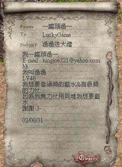

|
2002年9月2日
香港天堂官方人員接受香港電台訪問
鳴謝玩家黑騎師提供資料！昨天香港天堂官方NC Gamania的市場推廣部人員Gloria接受了香港電台第一台e科net的訪問，主題是香港網絡遊戲管理及發展，網本在收聽後發覺沒有甚麼特別的消息=.=，有關內容大家可以在香港電台的連結內重溫！（廣東話）
獎品總值20,000,000的香港太陽神非官方活動 - 湯湯送大禮！
玩家一罐頭湯一決定退出天堂，並將所有道具送出，究竟甚樣才能夠得到道具呢？請看以下的資料，轉載自無名論壇：
最正既非方節目,湯湯送大禮,只要一封白鴿信,即可得到近2000k之道具,獎品之豐富無人能及,請好好把握機會,參加這次之抽獎
玩法:只需寫封白鴿信,填上角色名稱,電郵,名稱,等級,為什麼想要該物品等等資料,再寄給" LuckyGame " (開個新人用英文名,唔識打中文都玩到)即可
普通獎
祝福金幣300個(20份)
祝福糖果1粒(1份)
祝福紅水4枝(1份)
祝福橙水3枝(1份)
祝福綠水1枝(1份)
祝褔白水3枝(1份)
濃縮紅水55枝
濃縮橙水24枝
濃縮白水11枝(1份)
藍水38枝
白水45枝
橙水25枝(1份)
+0保斗+0紅(1份)
天堂地圖1套(2份)
項鍊1set+介子1set(1份)
鑽石20粒
品鑽4粒
綠石6粒
品綠10粒
紅石23粒
品紅14粒
高品紅6粒
高品藍18粒(1份)
粗米97粒
純粒295粒(1份)
魔石63粒
慎水48枝(1份)
變形卷31張(1份)
人魚之鱗42(1份)
復活蛋5粒(2份)
體劍3把鎖破1把(1份)
高級獎
14LV杜賓狗2隻(1份)
18lv杜賓狗一隻(1份)
23lv杜賓狗2隻(1份)
妖魔戰士護身符(1份)
祝福瞬間移動卷600張(1份)
+6精靈盾牌(1份)
+4鋼鞋(1份)
+5鋼手套(1份)
+5保護者斗蓬(1份)
+6細劍(1份)
+6奧里哈魯根的角(1份)
+6瑪那魔仗(1份)
召喚書一本(1份)
湯湯大獎
+6力量魔法仗(1份)
+6t恤(1份)
+6綿長(1份)
+6抗魔法頭盔(1份)
注意:每個人名可參加2次遊戲(普通獎&大獎各一次)
玩法:只需寫封白鴿信,填上角色名稱,電郵,名稱,等級,想要什麼為什麼想要該物品等等資料,再寄給" LuckyGame " (開個新人用英文名,唔識打中文都玩到)即可
記住個個標題寫"湯湯送大禮"
截止收信日期,9月2日
得獎者會以白鴿信通知

本人在這說明,本人所送之物品是100%真的,昨日8/31在奇岩競技場也展示過,而且本人會在抽獎後在此公報結果,更會與得獎人拍照證明的,對於大家對這之抽獎的懷疑,本人深感抱歉
普通紅水和祝福紅水回復量大測試
By: 天堂．真相
究竟祝福的藥水和普通的分別有多大？而大家又知不知道紅水究竟實際可以回復多少HP？因此本網做了一個普通紅水和祝福紅水的測試，我們各測試了100支，並記錄它們的回復量，結果如下：
| 普通紅水（最小值8，最大值24，平均16.36） |
| 回復量 |
8 |
9 |
10 |
11 |
12 |
13 |
14 |
15 |
16 |
17 |
18 |
19 |
20 |
21 |
22 |
23 |
24 |
| 出現次數 |
2 |
1 |
4 |
5 |
6 |
6 |
9 |
10 |
11 |
9 |
5 |
7 |
9 |
4 |
5 |
4 |
3 |
| 祝福紅水（最小值12，最大值40，平均25.02） |
| 回復量 |
10 |
11 |
12 |
13 |
14 |
15 |
16 |
17 |
18 |
19 |
20 |
21 |
22 |
23 |
24 |
25 |
| 出現次數 |
0 |
0 |
1 |
1 |
2 |
3 |
1 |
2 |
2 |
6 |
3 |
5 |
4 |
5 |
3 |
11 |
| 回復量 |
26 |
27 |
28 |
29 |
30 |
31 |
32 |
33 |
34 |
35 |
36 |
37 |
38 |
39 |
40 |
|
| 出現次數 |
9 |
12 |
6 |
4 |
6 |
5 |
2 |
2 |
1 |
1 |
1 |
1 |
0 |
0 |
1 |
|
根據以上資料，首先越接近中間數的出現次數較接近上下限的為多，因此可見回復量是由擲數次骰子的總和來決定的。
根據兩者的最小值，最大值及平均值，本網推斷兩者的回復量如下：
普通紅水的回復量為8d3（擲8次3面擲的總和），範圍(8-24)，平均值16。
祝福紅水的回復量為10d4（擲10次4面擲的總和），範圍(10-40)，平均值25，比普通的多了56%！
除了紅水和祝紅外，本網亦想測試其他藥水的實際回復量，但由於資源有限，因此現在尋求各大熱心玩家的幫助。假如閣下在香港太陽神伺服器可以免費提供詛咒的紅水/橙水/白水或祝福的橙水/白水作為測試之用的話，請在遊戲中聯絡"Lineage"；假如閣下在其他伺服器的話，而又想參與測試，可以在閣下的伺服器自行測試，然後將所使用的藥水種類及回復量結果電郵給本網，例如閣下測試了10支詛咒的紅水，回復量是(8,6,7,7,8,10,12,11,9,7)的話，那麼閣下的電郵內容便要如下，以方便本網輸入Excel計算：
詛咒紅水(10)
8
6
7
7
8
10
12
11
9
7
在此希望各位能夠支持測試藥水的實際回復量，本網在計算到結果後會盡快公佈詳情及鳴謝名單！ |